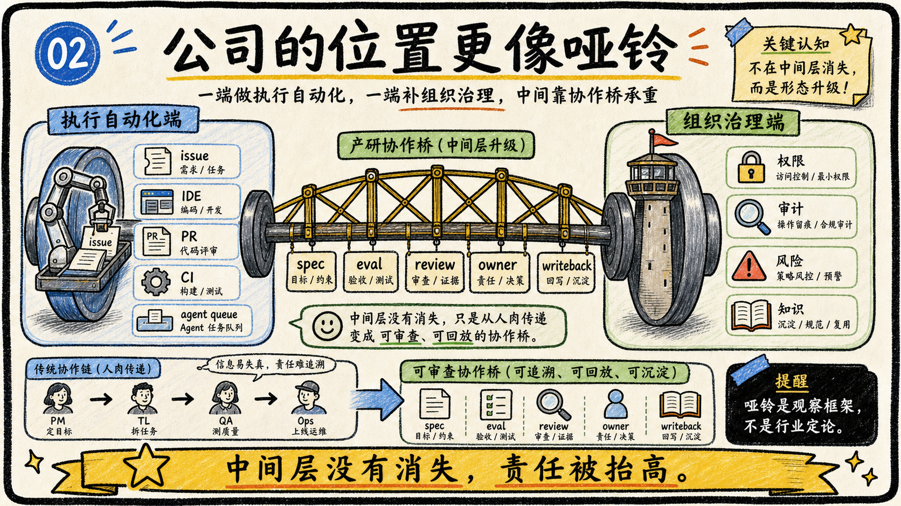

01 · 判断
AI 协作的关键，不是速度，而是责任怎么留下证据
OpenAI、Anthropic、Stripe、Block 的材料给了四个方向：工程系统 agent-first、专业工作流 human-AI 协作、商业协议 agent-readable、组织制度 AI-native。它们共同指向一个结论：AI 协作不是把任务丢给模型，而是重写工作对象、责任边界和验证方式。
我们自己的现场更直接。业务意图进入仓库后，会被翻译成 spec、任务、代码、测试、报告和 H5。真正的风险也在这里发生：意图被翻译错、验证只证明了中间层、页面看起来有 DOM 但用户看不到内容、数据库字段在 mock 中存在但真实库没有。AI 让交付变快，也让错误方向的返工变快。
李想和罗永浩这次对话给了一个更贴近经营现场的校准：泛化 AI 可以像更强的搜索和问答，但 Agent 要产生价值，必须进入真实生产环境，有任务、有数据、有反馈、有链路结果。没有这个环境，个人玩得再热闹也很快失去反馈；有这个环境，专业的人会把原来别扭的业务流程重新做一遍。这也决定了本文后面的技术路线：先把工作对象做成原型，再让 Agent 生成和比较方案，再压短从意图到证据的反应链，最后把记录、知识检索和个性化分层。
我们不是在学习一个工具，而是在决定哪些工作可以交给系统执行，哪些判断必须由人负责。
先说为什么
AI 让交付变快，也让错误方向的返工变快，所以问题不是工具，而是责任和证据。
再看问题在哪
我们的真实回路已经不是线性流程，而是意图、实现、验证、打回、写回反复循环。
再找外部校准
OpenAI、Anthropic、Stripe、Block 和李想访谈不是模板，而是用来校准边界、流程和反应链。
再落技术路线
路线不是搭平台，而是把一个真实场景做成可试、可比、可证、可写回的链路。
最后落到角色
产品、研发、测试、项目管理和 Boss 分别守住 owner、产物和证据，先用 30 天试点验证。
02 · 现场问题
现在的产研协作，已经不是线性流程
真实回路是反复翻译、验证、打回和写回。AI 可以处理大量中间劳动，但如果没有可审查的作业系统，它会把“看起来完成”推到最前面，把“真实可用”留到最后被用户发现。
Step 1
用户提出业务意图
用原话记录对象、动作、结果和判断，不先替用户改写成技术方案。
Step 2
Agent 翻译成 spec / tasks
允许系统组织材料，但必须保留用户意图映射和非目标。
Step 3
实现、报告、测试同时推进
速度提升明显，但也会放大范围漂移和局部自洽。
Step 4
真实路径暴露问题
真实 DB、真实页面、真实权限、真实用户路径经常击穿中间证据。
Step 5
用户反馈打回
打回不是失败本身，重复踩同类坑才是组织成本。
Step 6
失败写回规则和证据
写成 gate、ADR、log、tests、skill，下一轮才会少错。

前一版 H5 的核心模型：左侧是人的目标、判断和责任，右侧是系统执行、验证和回放，中间靠 spec、eval、review packet、wiki、rules、issue、PR 连接。
03 · 先看结论图
先用一张图看清楚：我们要重塑的是作业方式
这张图把整篇 H5 压成一个判断：我们不做 AI 军备竞赛，而是把 AI 放进产研链路，让意图、执行、证据、判断和写回形成闭环。
先定边界
不做基座模型、不做通用 RAG 平台、不追 AI 使用率、不让 AI 替代业务判断。
再跑闭环
意图包、Spec / ADR、Agent 执行包、证据矩阵、Review Packet、人类判断、失败写回、周度指标。
最后改角色
产品守意图，研发交证据，测试定完成，项目管状态，老板看结果。
04 · 来源与约束
先交代来源：这 9 步是外部调研和本地踩坑合出来的
上一节先给出闭环图，但图本身不能替代论证。这里先交代流程来源：外部材料给方向，本地事故给约束，最后才变成 9 个动作。OpenAI 证明工程系统要先变成 Agent 可读、可执行、可审查；Anthropic 证明专业工作流要先探索、计划、验证，再委托；Stripe 证明 Agent 参与业务动作时必须协议化责任链；Block 证明组织级 AI 要有 guardrails、skills、CI 和指标，同时不能只追使用率；李想访谈补上经营现场里的多方案、可验证 Demo 和专业 owner 视角。
1. 意图包
外部出处 Anthropic 的 Claude Code 工作法强调先 explore、plan、verify，再 delegate；六个问题诊断法也要求先抓真实需求和现状成本。本地证据 我们在共享 raw 数据需求里踩过“用户原话被翻译成内部表单能力”的漂移。落地含义 每个需求先写用户原话、业务对象、动作、结果、非目标、验收路径。没有意图包，Agent 不开工。
2. 多方案验证
外部出处 李想访谈里讲到 Agent 先分析、出多个方案、评分和优化，再由人选择；战略团队也先做可验证 Demo，再交工程专业化落地。本地证据 我们的报告、H5 和需求任务多次不是缺执行，而是缺方案比较和取舍证据，导致后面反复改方向。落地含义 重要需求进入实现前，先产出多个可验证方案、tradeoff、风险、评分和样例，由专业 owner 决定采用、合并或打回。
3. Spec / ADR 入口
外部出处 OpenAI Symphony 把 issue tracker 变成 Codex 编排入口；Stripe 把 Agent 交易做成可读协议链。本地证据 本仓库已经沉淀 46 个 OpenSpec specs、32 条 ADR，说明跨角色决策需要稳定入口。落地含义 跨模块、跨角色、改变默认协作方式的工作进入 Spec；稳定决策进入 ADR，不能散在聊天和会议里。
4. Agent 执行包
外部出处 OpenAI Codex / Harness 把 repo、tools、state、safety policy 放进执行循环；Anthropic Managed Agents 强调持久会话、沙箱和凭证隔离。本地证据 我们多次遇到“代码改了，但假设、边界、未做事项、风险不清楚”。落地含义 Agent 不只交代码，还要交任务范围、改动文件、假设、未做事项、验证命令和风险。
5. 证据矩阵
外部出处 Block 的 testing pyramid、guardrails、Actionable CI 和 Stripe 的 integration eval 都指向同一件事：AI 产物必须被真实验证。本地证据 raw list 优化里 mock 通过但真实 MySQL 缺字段；甘特图 DOM 存在但页面黑块不可用。落地含义 按风险选择单测、集成、真实 API、真实 DB、权限、截图、视觉、性能、回放证据，不能只看构建成功。
6. Review Packet
外部出处 OpenAI Symphony、GitHub issue-to-PR、Atlassian Rovo/Jira 都把 Agent 输出接到人类 review 对象上。本地证据 我们的 H5 和 ops 记录已经把链路写成：diff / 草稿 / test / log -> review packet -> owner 判断。落地含义 每个节点都要有 diff 摘要、业务映射、验证结果、截图或日志、风险和待判断问题。
7. 人类判断
外部出处 OpenAI 的核心表达是人负责驾驶、Agent 负责执行；Stripe 的启发是 Agent 参与业务动作时责任链必须清楚。本地证据 我们已经把原则写成“目标人定，过程可委托，结果可审计”。落地含义 目标、优先级、上线风险、业务取舍不能交给 Agent。Agent 给证据，人做判断。
8. 失败写回
外部出处 Block 的 skills、guardrails、CI 反馈，OpenAI 的 feedback loop，Anthropic 的 verify / delegate 都要求失败进入下一轮系统。本地证据 我们已经把需求漂移、真实 DB、视觉验收、报告形态漂移写进 logs、gate、skill 和 ops。落地含义 每次打回必须归因，并写回 tests、ADR、ops、skill 或 checklist。只修当前 bug 不算闭环。
9. 周度指标
外部出处 Block 给出了 AI 使用率、AI-authored code、节省时间、自动 PR 增长等指标，同时也暴露效率叙事和裁员绑定的风险。本地证据 我们已经能统计 fixish 比例、RED/GREEN 证据、视觉日志、DB 日志、需求漂移日志和写回数量。落地含义 管理层不看“谁用了 AI”，而看真实验证覆盖、返工下降、事故减少、写回增加和负责人是否清楚。
所以这套系统不是从流程模板开始，而是从落地风险倒推：哪些动作不固定，哪里就会漂；哪些证据不留下，哪里就会被误判完成。
05 · 边界选择
我们不是互联网大厂，所以不做 AI 军备竞赛
有了来源和约束，下一步不是立刻开建，而是先划掉错误方向。我们的目标不是成为 OpenAI、Anthropic、Stripe 或 Block。我们不是基座模型公司，不做通用 RAG 平台，不把组织精力砸进“先搭一个 AI 中台”的大工程，也不把 AI 使用率当成管理成绩。
不做基座模型
训练、微调、评测通用模型不是我们的核心战场。那是资本、算力、研究、数据闭环都完全不同的业务。我们要买能力、用能力、约束能力，不是假装自己也要造一个底座。
不做通用 RAG 平台
“把所有文档丢进去搜索”很容易变成另一个无人负责的知识坟场。我们更需要的是 agent-readable 的工作对象：需求原话、OpenSpec、ADR、测试证据、运行日志、视觉验收、review packet。能触发行动和验证，才有价值。
不追 AI 使用率
如果只统计“多少人用了 AI”，最后会得到一堆更快生成的草稿和更难追责的错误。应该看的是：真实需求到可验证结果的周期、重复返工是否下降、证据是否完整、失败是否写回。
不让 AI 替代业务判断
AI 可以帮忙拆任务、补测试、写草稿、查证据、跑回放，但不能替用户决定什么是好结果，也不能替产品和负责人承担裁剪、取舍、上线风险。
我们能做的，是把 AI 放进现有产研链路里，让每个重要动作都更快、更清楚、更可验证。
06 · 访谈校准
四个层次讲清楚：原型、方案、反应链、分层架构
边界划清后，李想访谈提供了更具体的建设顺序。它真正值得写的，不是“他也在用 Claude Code”，而是四个层次本身已经把 Agent 的价值边界讲出来了：第一层，研究团队先把判断做成原型；第二层，Agent 把方案生成和方案比较结构化；第三层，底盘智能把感知到执行的反应链压短；第四层，车内 Agent 架构把泛化能力和确定性能力分开。
层次
角色
目标
做法
完成结果
第一层
Cowork Demo
研究判断先变成可跑原型
战略/研究负责人带几个校招生，不是正式工程团队先上。
回答工作协同、数据获取、人的工作价值衡量三个经营问题。
研究 Anthropic Cowork 后做出 Demo，把协同、数据、云端/本地模型和价值衡量放进同一界面。
Demo 成为和 HR、数仓团队讨论真实接入的对象，而不是一份抽象 PRD。
第二层
Agent 方案流程
决策前先产生可比较方案
管理者或业务 owner，负责选择，而不是把判断交给 Agent。
提高方案质量，避免团队只包装一个主推路径。
分析 -> 多方案 -> 博弈/打分 -> 优化 -> 人选择 -> 执行。
决策前材料从“单一路径包装”变成“多方案比较”。
第三层
底盘智能
压短感知到执行的整条反应链
整车智能系统团队，不只是模型团队。
让车从感知到执行更快、更可控、更让人信任。
把感知、模型、控制和执行器一起设计，而不是只优化一个模型。
人类反应约 350-400ms，旧系统约 400ms，新系统降到 200 多 ms；线控制动降到 13ms。
第四层
Agent 记忆
从上下文堆叠改成记录和个性化分层
车内 Agent 架构团队，负责拆分能力边界。
不是做万能助手，而是让泛化任务、信息获取、精确控制、必要记录和个性化各走正确路径。
记录归记录，个性化归个性化，检索交给知识图谱/RAG，稳定偏好用简单参数记忆。
Agent、ChatBot、记录、知识图谱/RAG、个性化各司其职，不再把所有内容塞进上下文。
这四个层次放在一起看，重点不是“AI 很厉害”，而是“生产系统的反应链正在被重写”：研究先变成原型，决策先变成方案流程，硬件智能变成端到端反应时间，Agent 记忆变成记录、检索、个性化和路由的分层架构。
回到我们的主题：产研协作也要先看反应链
我们要借鉴的不是汽车行业的具体技术，而是这套看问题的方法：不要只看某个 Agent 能不能写得更快，而要看从用户意图到方案、从方案到 Spec、从 Spec 到执行、从执行到证据、从证据到判断、从失败到写回，整条链路有没有缩短、有没有更可靠、有没有更容易被审查。
专业的人做专业的事，但产物要更早可验证
研究人员不是只交报告，而是交 Demo；产品不是只交需求摘要，而是交意图包和方案取舍；工程不是只交代码，而是交可运行系统和执行证据；测试不是只找问题，而是定义什么证据证明用户路径成立。AI 的价值，是把专业判断更早推到可验证状态。
做难而正确的事
难点不是再接一个工具，而是解决协同、数据、安全、价值衡量和责任链：谁出题，谁给方案，谁验证，谁拍板，谁写回。这个链条固定住，AI 才不是局部提效。
07 · 技术路线图
技术路线不是搭平台，而是把一条真实链路跑通
这张路线图不能写成“接入大模型、接入知识库、接入工作流”。那还是工具堆叠。真正要回答的是四个顺序问题：先让什么工作对象可试，谁来比较方案，证据链怎么从后置验收前移，哪些东西应该沉淀成记录、检索和个性化。
第一步
先做一个可跑原型
从 Cowork Demo 学到的不是“研究员会写代码”，而是判断要先变成可操作对象。
把“看板异常解释链路”先做成一个能点开的工作原型。
用户看到指标异常后，系统要能带出原始样本、可能原因、处理动作和待确认问题。第一版不追求覆盖所有场景，也不先做平台权限和知识库全接入；它只证明一件事：产品、研发、测试和业务 owner 能围着同一个工作对象讨论，而不是各自拿文字材料猜。
输入 用户原话、指标口径、样本数据、已知异常案例。
动作 做出可操作界面或 Demo，让真实角色能试。
验收 业务 owner 能指出缺口，数据团队能判断字段和权限边界。
第二步
方案先竞争，再进 Spec
Agent 的价值不是替人拍板，而是把方案、反对意见和代价提前摊开。
不要让第一个方案直接变成开发任务。
每个原型链路进入工程前，先让 Agent 产出两到三条可比较路径：最小可行方案、稳妥方案、长期可扩展方案。每条方案都要写清代价、风险、验证方式和放弃什么。人负责选择，Agent 负责把选择前的材料做完整。
输入 原型反馈、历史 ADR、失败案例、权限和性能约束。
动作 分析 -> 多方案 -> 博弈/打分 -> 优化 -> 人选择。
验收 进入 Spec 的不是“第一稿”，而是被专业 owner 选择或合并后的方案。
第三步
按反应链设计工程
底盘智能的启发是端到端链路变短，不是某个模型单点变强。
从用户意图到 review packet，中间每一段都要有证据。
工程实现不能只交代码，测试也不能只在尾部找问题。被选中的方案要一路变成 Spec、diff、真实 DB/API 检查、浏览器截图、视觉验收、性能耗时和风险结论。我们要压短的不是“写代码时间”，而是从发现问题到能判断能不能上线的整条反应链。
输入 被选方案、验收路径、真实数据和风险清单。
动作 Spec、实现、测试、截图、日志、review packet 同步推进。
验收 打回时能定位卡在意图、方案、实现、验证还是判断。
第四步
最后再做记忆分层
记忆不是把所有历史塞进上下文，而是把记录、检索、规则和偏好分开。
先让失败和选择可写回，再谈“系统会记住”。
每次方案被打回、上线被拦、视觉验收失败、真实库字段不对，都要写回到对应位置：ADR 记录稳定决策，ops 记录过程教训，skill / gate 记录下次触发边界，RAG 负责检索事实，个性化只保存少量稳定偏好。这样下一次 Agent 读到的是边界，不是一堆历史聊天。
输入 失败归因、review 结论、ADR、ops、skill、业务术语。
动作 记录归记录，检索归检索，规则归规则，偏好归偏好。
验收 下一次同类任务能自动触发边界；无关历史不会污染当前判断。
0-30 天
只选一个高频场景，把原型、方案竞争、执行证据和一次失败写回跑完。这个阶段不追求平台化。
31-60 天
把 review packet、真实环境验证、视觉截图和打回归因固化成默认动作，让链路能稳定重复。
61-90 天
再接记忆与知识层：ADR、ops、skill、RAG、偏好分开建设，目标是减少重复踩坑，而不是制造一个万能助手。
这条路线的重点不是“我们要建什么平台”，而是每一步都把不确定判断变成可试、可比、可证、可写回的工作对象。
08 · 最小系统
最小可行方向：AI-assisted 产研作业系统
技术路线已经收敛到“一条真实链路”，所以最小可行方向也要收窄。这不是平台战略，是日常工作方式升级。我们已经有真实业务系统、真实看板、真实 DB、真实会议、真实需求、真实事故日志。AI 最应该进入的地方，是那些高频、重复、容易漂移、又必须留下证据的协作动作。第一步只做一个场景，把“提出问题、比较方案、执行验证、失败写回”完整跑通。
需求进入
把用户原话、对象、动作、结果、非目标、验收路径转成 OpenSpec 或任务包。AI 做整理，人确认意图。
研发执行
把 spec 拆成可审查 diff、测试、验证脚本和风险清单。AI 提高产出密度，工程师负责架构边界和运行证据。
测试验证
自动生成 RED/GREEN 场景、真实 DB 检查、浏览器截图、视觉断言、权限路径和回放材料。测试定义完成标准，不只做尾部兜底。
项目管理
用 AI 汇总会议、日志、延期、风险、阻塞和证据包，但状态必须落到业务链路：意图、spec、执行、审查、真实验证、写回。
知识写回
把踩坑写成 ADR、gate、skill、ops、tests。不是为了文档好看，而是让下一次 Agent 和下一位同事不再从零开始。
09 · 工作流
重点清单：重塑软件工程工作方式，不是加一个 AI 工具
最小系统要能重复运行，就需要把它拆成固定工作流。接下来要做的不是“推广 AI 使用”，而是改造软件工程的工作对象。以前的主线是需求、开发、测试、上线；新的主线应该是意图、方案、spec、Agent 执行、证据包、人类判断、失败写回。九步流程的意义，不是多一套管理表格，而是保证每个需求都能从可试对象走到可审查结果。
1. 意图包
每个需求先沉淀用户原话、业务对象、动作、期望结果、非目标、负责人和验收路径。产品和 PM 对这里负责。没有意图包，Agent 不应直接开工；有了意图包，也要先让 Agent 做分析和反向问题，而不是立刻写实现。
2. 多方案验证
进入正式实现前，先让 Agent 产出多个可验证方案，给出 tradeoff、风险、成本和评分；专业 owner 再选择或合并方案。这个动作把过去会议里的猜测，变成可审查的方案竞争。
3. Spec / ADR 入口
跨模块、跨角色、会改变默认协作方式的工作进入 OpenSpec；稳定决策进入 ADR。研发组长负责判断是否需要 spec，不能让大改动伪装成小修。
4. Agent 执行包
Agent 每次执行要留下任务范围、改动文件、假设、未做事项、测试和验证命令。工程师审查的是执行包，不是只看“代码已经改了”。
5. 证据矩阵
按风险选择证据：单测、集成、真实 API、真实 DB、权限路径、浏览器截图、视觉断言、性能耗时、回放场景。测试部门把证据矩阵变成准入标准。
6. Review packet
每个可审查节点都要有 diff 摘要、业务映射、验证结果、截图或日志、风险、需要人判断的问题。没有 review packet，就没有真正的“交付给人审”。
7. Skill 门禁
把高频失败写成 skill 或 gate：需求翻译漂移、真实 DB 验证、视觉验收、公共报告形态、H5 输出约束、行为回放。skill 不是提示词收藏，是下一轮运行时会触发的边界。
8. 失败写回
每次打回都归类：意图错、spec 错、实现错、验证假、视觉错、范围错、项目节奏错。然后写回 tests、ADR、ops、skill 或 checklist。只修当前 bug，不写回，就是下次继续交学费。
9. 周度指标
管理层看趋势，不看口号：需求到 review packet 的周期、真实验证覆盖、返工次数、fixish 比例、RED/GREEN 证据、运行库事故、视觉打回、写回数量、重复坑是否下降。
这会改变产研协作的默认问题：不再问“谁在开发”，而是问“意图有没有锁定，spec 有没有接受，Agent 执行有没有证据，人审有没有结论，失败有没有写回”。
10 · 工程重塑
软件工程从交付流水线，变成证据驱动的协作系统
旧模式
需求评审后进入开发，开发完成后给测试，测试发现问题再回流。文档、判断、验证、事故复盘经常散在聊天、会议、个人脑子和临时记录里。
新模式
需求一进入就被结构化成意图包、方案包和 spec；Agent 负责生成多方案、代码、测试、报告、截图和证据；人负责判断目标、边界、取舍、上线风险；系统负责留下可回放记录、可检索知识和可修改偏好。
变化一
产品不再只是写需求，而是维护“用户意图不被翻译漂移”的证据链。
变化二
研发不再只是提交代码，而是提交可审查的工程结果：代码、测试、运行证据、风险和未决判断。
变化三
测试不再只是找 bug，而是定义什么证据足以证明用户路径真的成立。
变化四
项目管理不再只是催进度，而是维护协作状态机，让每个任务都能看出卡在意图、spec、执行、验证、审查还是写回。
11 · 模式数据
没有 Spec 时像救火；有了 Spec 和 Skill 后，问题先变得更可见
工作流写完后，需要回到数据看它是不是凭空想象。这组数据不能被解释成“上了 Spec 以后立刻少修 bug”。真实变化更像三段：先靠高频修复推进，再用 OpenSpec 把问题显性化，最后用 skill 门禁把输出形态、证据和回放约束住。短期内修复提交可能上升，因为以前藏在口头确认、局部 smoke、页面观感里的问题开始被命名。
account-team-efficiency：OpenSpec 前
2026-03-16 到 2026-04-10，主要是功能推进、REQ 记录、迁移和连续修复。节奏很快，但验证更多靠局部结果，修复提交占比已经不低。
323 commits
26 calendar days
13 active days
86 fixish commits
fixish 26.6%
1 test commit
account-team-efficiency：OpenSpec 初期
2026-04-11 到 2026-05-05，平台管理员、数据源团队范围、看板、CLI、加密 DB 配置等开始进入 OpenSpec 或 spec 化流程。fixish 比例升高，不是变差，而是以前靠经验推进的问题开始被拆成明确修复对象。
121 commits
25 calendar days
39 fixish commits
fixish 32.2%
40 docs commits
5 test commits
account-team-efficiency：门禁压力出现后
2026-05-06 到 2026-05-09，视觉验收、真实 DB、需求翻译漂移、共享 raw 数据等问题被写进日志和 gate。短窗口内 fixish 占比降到 24.5%，但更重要的是证据类型变了：不再只看构建和 mock，而是看真实库、真实页面、截图和用户路径。
49 commits
4 active days
12 fixish commits
fixish 24.5%
3 spec commits
2 test commits
account-meeting-lore：Skill 门禁成型
2026-04-14 到 2026-05-11，协作规则从 wiki 记录发展成 OpenSpec、ADR、skill、ops、report gate review。5 月 8 日公共报告质量门禁出现后，修复提交比例从 3.6% 升到 8.5%，这不是返工失败，而是文章结构、输出形态、引用方式、回放证据被纳入审查。
473 commits
28 calendar days
46 specs
32 ADR
26 skills
4 report gate reviews
数据口径：当前 checked-out 分支，`git log --no-merges`，fixish 按提交标题中的 fix、修复、bug、restore、resolve、hotfix 统计。它反映协作模式变化，不等同于线上缺陷率。
12 · 产出证据
总产出不是文件数量，而是证据种类变多了
更重要的不是提交数量，而是证据种类是否变多。两个项目合计 966 个非合并提交，其中 2026-05-01 以后 268 个。account-team-efficiency 留下 160 条协作日志、118 个测试相关文件、37 条 RED 证据日志、33 条 GREEN 证据日志、26 条视觉或截图相关日志、81 条运行库或 DB 相关日志、91 条需求或范围漂移相关日志、13 条性能或超时相关日志。account-meeting-lore 留下 46 个 OpenSpec specs、32 条 ADR、105 条 ops 记录、26 个 repo-local skills、8 个 H5/report HTML、4 个 report gate review。
变化不只是“做得更多”，而是每次产出都更容易回答：为什么做、做了什么、怎么验证、错在哪里、下次谁会读到。
13 · 失败证据
我们踩过的坑，都说明“中间正确”不等于“用户成功”
需求翻译漂移
用户要的是“任务产生的原始数据可以开放给其他组进行加工，通知任务可以选中并按照团队加工”。实现过程却把它翻译成更窄的内部模型：只在某个任务表单入口开放，流程侧仍然读当前团队数据。结果是技术说明自洽，用户路径仍然不通。
范围裁剪切断判断链
异常、离群、样本、原因、处理动作本来是一条业务判断链。只做“能看到异常”，不做“能下钻样本和原因”，就会让产品看似上线、用户无法判断。AI 很容易把可交付切成局部页面，而不是业务闭环。
假验证掩盖真实库问题
raw list 延迟优化里，测试假数据包含新字段，编译和 mock 都通过；真实 MySQL 表却没有 `item_count`、`payload_bytes`、`synced_at`，认证后的接口直接 500。结论很简单：DB 相关变更，没有真实运行库证据就不能声称完成。
DOM 存在不代表视觉可用
甘特图问题里，旧证据只看构建、接口、SVG、console；浏览器实际检查才发现背景 `fill` 变成黑色，高度异常膨胀。前端验收必须包含运行页面截图、关键图形 computed style、移动端和窄屏检查。
错误方向的返工被加速
多轮日志弹窗问题反复修表层交互，真正阻塞在后端 500 和数据链路。AI 能很快补丁，但如果没有 review packet 和真实路径证据，速度会变成“更快地重复错”。
14 · 外部坐标回看
回头看外部材料：它们不是模板，而是四个可选择的转型方向
本地失败说明了为什么需要证据链，外部材料则说明这条路不是孤立经验。它们不是让我们照抄，而是帮助判断哪些方向适合我们、哪些方向应该避开。
OpenAI：工程系统 agent-first
Harness 的重点不是“写更多代码”，而是 repo、issue、CI、review、观测和文档构成 agent 可以工作的操作系统。公开材料中的数字包括约 5 个月、约 100 万行代码、1500 个 PR、早期 3 名工程师后扩到 7 名。
Anthropic：专业工作流 human-AI 协作
Claude 的价值在数据、产品、安全、营销、设计、法律等场景里展开。关键动作是先探索、再计划、再验证，同时管理上下文、MCP 和子任务边界。
Stripe：协议层 agent-readable
Instant Checkout、ACP、SPT 的启发在于：当 Agent 进入商业交易，用户、Agent、商家和支付网络之间必须有协议化的责任链。
Block：组织制度和风险并存
公开材料显示 95% 工程师经常使用 AI，50 位 AI Champions 投入 30% 时间做赋能，AI-authored code +69%，节省时间 +37%，自动 PR +21x。但组织叙事也会和裁员、岗位减少、信任边界缠在一起。
李想访谈：垂直生产环境和专业 owner
这次访谈补上一个经营视角：泛化问答只是入口，Agent 价值来自真实生产环境；专业人士用 AI 做可验证方案和 Demo，再由工程、测试和业务 owner 进入可规模化生产。它也把我们的路线拆清楚：原型、方案、反应链、分层架构。
我们不直接照搬任何一家。我们的当前问题更接近“产研作业系统”：把业务意图、方案验证、工程执行、测试证据、项目节奏和管理判断连接成可审查链路。
15 · 角色变化
岗位怎么变：9 步流程里的 owner、产物和证据
到这里，流程、数据和失败案例都指向同一件事：路线不会自己运行，必须落到 owner、产物和证据上。不是问“产品要不要写代码”，而是问每一步谁拥有产物、什么证据证明完成。Agent 可以执行很多动作，但 owner、边界和完成判断必须落到人和系统记录上。专业的人不是被 AI 替代，而是用 AI 把自己的判断变成更早可验证、更容易被工程化的产物。
1. 意图包
产物 用户原话、业务对象、动作、期望结果、非目标、负责人、验收路径。证据 Agent 能复述任务边界，不自行扩大范围；研发和测试能据此判断做与不做。岗位变化 产品不再只是写需求摘要，而是守住用户意图不被翻译漂移。
2. 多方案验证
产物 Agent 分析、多个方案、评分、反向意见、可验证 Demo 或样例。证据 方案不是单一路径推销，而是能比较 tradeoff，并能被专业 owner 选择、打回或合并。岗位变化 专业负责人从“写解释材料”上移到“把判断变成可验证方案”。
3. Spec / ADR 入口
产物 OpenSpec、ADR 或明确的不进入理由，包含范围、非目标、验收、风险和回滚边界。证据 跨模块、跨角色、改变默认协作方式的工作没有伪装成小修；稳定决策能被下一轮读取。岗位变化 研发组长从“分配开发任务”上移到判断工作是否需要进入正式决策入口。
4. Agent 执行包
产物 diff、改动文件、假设、未做事项、验证命令、风险清单和必要截图或日志。证据 Reviewer 不需要翻聊天记录，也能看清代码如何映射用户原话、哪些路径被验证、哪些只是 smoke。岗位变化 工程师不是把判断外包给 AI，而是提交可审查的工程结果和执行证据。
5. 证据矩阵
产物 单测、集成、真实 API、真实 DB、权限路径、浏览器交互、截图、视觉断言、性能和回放要求。证据 证据覆盖用户真实路径和风险等级，不用 mock 字段、DOM 存在或构建通过冒充完成。岗位变化 测试不再是尾部兜底，而是在执行前后定义“什么证据足以证明完成”。
6. Review Packet
产物 业务映射、diff 摘要、验证结果、截图或日志、风险、待人判断问题。证据 人类可以直接做 approve / reject / defer 判断，而不是重新翻仓库、会议和聊天。岗位变化 负责人审的是完整判断包，不是只问“代码改完了吗”。
7. 人类判断
产物 通过、打回、延期、缩范围或上线风险接受的明确结论。证据 决定和理由被写下，后续事故或复盘能回到当时的取舍。岗位变化 管理层不替 Agent 做执行，但必须负责优先级、范围取舍、上线风险和组织信任边界。
8. 失败写回
产物 tests、ADR、ops、skill、checklist 或项目规则更新。证据 同类问题下一次有触发器、检查项或门禁，不靠某个人记得这次踩过坑。岗位变化 产品写回意图漂移，研发写回实现和架构坑，测试写回证据缺口，项目写回节奏和边界问题。
9. 周度指标
产物 周期、验证覆盖、返工、事故、写回、重复坑、owner 清晰度趋势。证据 管理层看到的是作业系统健康度，而不是“谁用了多少 AI”。岗位变化 项目管理从催进度变成维护状态机；Boss 从看使用率变成看瓶颈、风险和责任链。
Boss
停止只问 AI 使用率；开始问哪一步卡住、哪个 owner 证据不清；产物是每周 operating-system review。
产品 / PM
停止只交整理后的需求摘要；开始交意图包、非目标、验收路径、裁剪取舍和可验证方案；产物是用户路径验收样例和方案对比。
研发组长
停止把所有需求都当小实现；开始判断 Spec / ADR 入口、拆解边界、review packet 标准和回滚边界。
研发工程师
停止让 AI 只交代码；开始把被选中的方案工程化，并交执行包：diff、假设、验证、风险和未做事项。
QA / 测试
停止等功能完成后再进入；开始在执行前后定义证据矩阵、回放场景和真实环境检查。
项目管理
停止只报进行中、延期、完成；开始维护 9 状态链路：意图、方案验证、spec、执行、证据、review、人审、真实验证、写回。
16 · 写作流程
以后写这类文章，先锁证据链，再写观点
这篇文章本身也是一次产研协作样例：如果证据、结构和结论没有先锁住，后面就会不断出现“局部改好了、全文又乱了”的问题。所以写作流程也要按同一套证据链处理。
Why
先写清楚这篇给谁解决什么判断问题。不是“介绍 AI 协作”，而是回答某个组织下一步该怎么协作。
What
列出要复用的材料、明确不复用的材料、需要保留的输出形态。newspaper、article、report 一旦选定，就不能漂成数据看板、卡片墙或表格格子。
Where
所有数据都要能回到仓库、日志、ADR、OpenSpec、H5、gate review 或明确的外部材料，不能只写“我们感觉”。
When
必须有时间切片。没有 Spec、OpenSpec 初期、skill 门禁后，要分开讲；否则只会变成抽象复盘。
Who
把结论落到 Boss、产品、研发组长、工程师、测试、项目管理各自的责任链，而不是泛泛说“团队要提升”。
How
每篇 H5 都附 gate review：意图契约、引用结构、输出形态、数据口径、禁止漂移项、残余风险。这样下一次 Agent 才能回放。
17 · 下一步
先用一个真实链路做 30 天试点
现在才到行动建议：不要再写一套宏大制度，而是挑一个高频且容易暴露判断链的场景：看板指标异常解释链路。这个试点只验证一条线：异常解释先做成可跑原型，处理路径先做多方案比较，真实 DB / API / 截图形成证据链，最后把失败样例、业务偏好和规则写回。
前一版 H5 的“操作系统”结论：Agent 不是孤立工具，必须被 issue、spec、测试、CI、review、wiki、规则、权限共同约束。
30 天内按岗位只看 8 件事
产品选一个看板指标异常场景，交第一版意图包。
业务 owner / 产品用 Agent 做分析、三套方案、评分和可验证样例。
研发组长判断是否进入 Spec / ADR，并写清执行边界。
研发工程师把被选中的方案工程化，同时提交执行包。
QA 定义真实 DB、真实 API、浏览器截图和视觉证据。
项目管理跟踪任务卡在哪个状态，而不是只跟日期。
Boss 每周看返工、事故、写回和 owner 清晰度，不看 AI 使用率。
每次打回都归因，并写回测试、ADR、skill 或项目规则。
18 · 最终判断
目标人定，过程可委托，结果可审计
产研工作方式的转变，不是把产品、研发、测试、项目管理都变成会提问的人，而是让每个角色都知道自己守哪一段责任链。人决定目标、边界和取舍；Agent 分析问题、生成多方案、放大专业判断、执行重复劳动、生成证据；系统留下可复盘、可回放、可检索、可改进的记录。
这就是我们接下来应该做的事：从“AI 帮忙”切到“AI 协作作业系统”。技术上不要先追平台完整度，而是先跑通一条真实链路；管理上守住 5W1H：为什么做、为谁做、做什么、不做什么、在哪里验证、怎么证明。SMART 可以作为检查表，但核心不是模型名称，而是把责任、证据和写回固定下来。